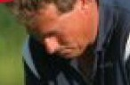
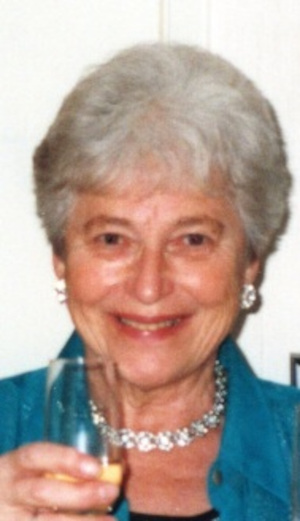

|
Född
1 mar 1989
i Rystad (E)
1
.
|
|
Karin Maria Angvik
Född 1 mar 1989 i Rystad (E) 1 . |
 F Bo Stefan Lennart Angvik.Född 5 maj 1961 i Linköpings Sankt Lars (E) 2 . |
FF
Lennart Gustaf Angvik.
Född 7 apr 1935 i Örebro Olaus Petri (T) 3 . |
|
|
 FM Sickan Berit Ing-Marie Angvik f Karlsson.Född 18 mar 1935 i Fiskebyvägen 22, Pryssgården, Norrköping, Norrköpings Östra Eneby (E) 4 . Död 4 jul 2009 på Tunngatan 7, Gård 4, Kv Rovdjuret, Vidingsjö, Linköping, Linköpings Berga (E) 5 . |
FMF Ivan Bertil Karlsson. Född 28 sep 1903 i Lilla Udden, Bonäs, Norrköpings Östra Eneby (E) 6 . Död 18 jan 1971 på Reenstiernagatan 62, Gård 6, Kv Gården, Enebymo, Norrköping, Norrköpings Östra Eneby (E) 5 . |
||
|
FMM Margit Alice Karlsson f Söderlund. Född 4 aug 1906 i Kv Stopet, Östantill, Norrköping, Norrköpings Sankt Olai (E) 7 . Död 26 mar 1995 i Norrköpings Östra Eneby (E) 5 . |
|||
|
M
Kerstin Maria Viola Angvik f Kindell.
Född 19 jul 1964 i Gammalkil (E) 8 . |
|||
Framställd 12 aug 2026 med hjälp av Disgen version 2025.